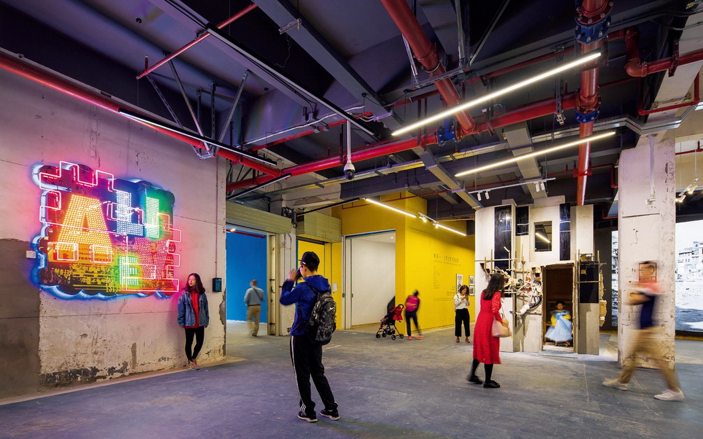

介紹：
南头古城，又称“新安故城”对于深圳而言，南头古城的存在有着特别的意义，体现了历代岭南人民对海洋文化的探索与追求，也体现了深圳文化的包容性、多元化以及岭南人民奋勇抗击外敌的爱国主义精神。
文天祥
文天祥是南宋亡國丞相，但他那堅毅的愛國精神背後人承作「宋亡三節」中的其一，「人生自古誰無死，留取丹心照汗青。」便是其跳崖前做的千古名言。
厂房区：

廠房是由舊建築組成的新式潮流設計，加上色彩斑斕的光線，很符合當代年輕人的審美，吸引遊客冒名前來打卡。同時這和上述所言有歷史痕跡的寺廟形成時代的碰撞，有種時光交叉的新穎感，增添南投古城的色彩。
❮
❯